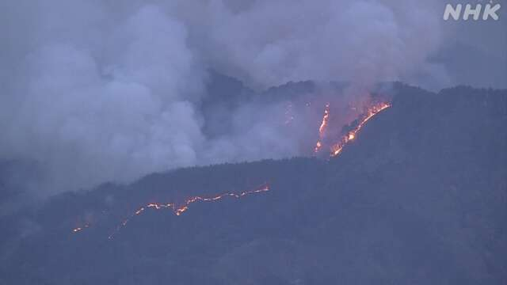
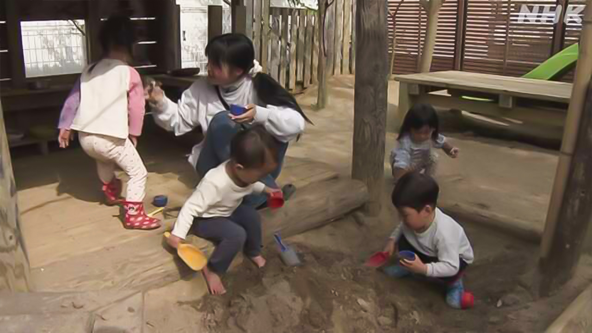

最新ニュース
1️⃣ 岩手県の山で火事 まだ火は消えていない

山の火事のニュースです。
岩手県大槌町にある山の2つの場所で、22日、火事がありました。
県や自衛隊などのヘリコプターが空から水をまきましたが、まだ火は消えていません。
町によると、23日午後5時までに、200ヘクタールぐらいが焼けました。家など7つの建物が焼けました。
大槌町は、20日に起こった大きい地震のあと、国から特別な注意の情報が出ています。
町長は「住んでいる人たちに、火事の情報を知らせます。そして地震にも気をつけるように言います」と話しています。
2️⃣ 宮城県塩釜市の保育園 地震のときどうするか話し合う

宮城県塩釜市にも、地震について国から特別な注意の情報が出ています。
塩釜市の「わだつみ保育園」では、先生たちが地震のときどうするかを話し合いました。
この中で、保育園の子どもたちがどうやって避難する場所に行けばよいか、かいた地図を貼ってほしいという意見がありました。今月入った子どもにも避難の練習をすぐにしてもらいたいという意見も出ました。
保育園は、特別な情報が出ている間は、遠足などをやめることにしました。
3️⃣ 株の価格 初めて6万円より高くなった
株の価格のニュースです。
東京株式市場で、23日の午前、株の価格が初めて6万円より高くなりました。
株の価格は、株を買ったり売ったりするときの値段です。去年の秋に5万円より高くなってから、半年で1万円高くなりました。アメリカとイランが日本時間の23日になっても戦いを止めていることなどが原因のようです。
しかし、そのあと株の価格が下がりました。きょうの最後の株の価格は、5万9000円ぐらいでした。
イランの問題についての心配が続いています。
4️⃣ 外国人を雇うとき県などが外国の政府と約束した「覚書」を作る
日本で働く外国人についてのニュースです。
東京や東京の周りの県では外国人がたくさん働いていますが、ほかの県では、外国人を雇うことが難しくなっています。
このため、県などが外国の政府との約束を書いた「覚書」を作ることが増えています。その県などで外国人に働いてもらおうと考えているからです。
NHKが調べると、北海道と大阪府と18の県が、ベトナムやインドネシア、インド、ネパールなどと、覚書を作っていました。
多くの県などでは3年ぐらい前から、農業や観光、介護などの仕事で外国人に働いてもらうための覚書を作りました。安心して働いたり生活したりできるようにすることなどを約束しています。
- 〜がある / 〜がいる
- 〜や〜など
- 〜など
- 〜から
- 〜ている / 〜でいる
- 〜まで
- 〜までに
- 〜くらい / 〜ぐらい
- 〜によると
- 〜後 / 〜あと
- 使役 (〜させる / 〜せる)
- 〜ように
- 〜について
- 〜という
- 〜中
- 〜かい / 〜だい
- 〜てもらう / 〜でもらう
- 〜ても / 〜でも
- 〜こと
- 〜ことにする
- 〜より
- 〜たり〜たりする
- 〜てから
- 〜ようだ / 〜みたいだ
- 〜になる
- 〜し、〜し
- 〜ため
- 〜ようにする
vebaev.github.io
Generated: 2026-04-23 13:48:41 UTC